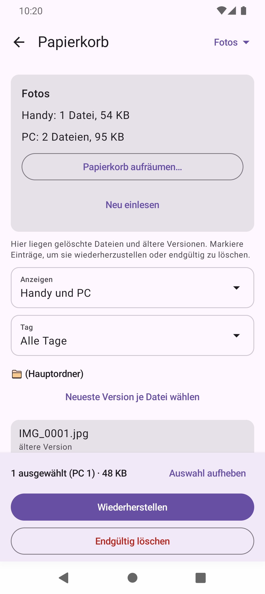
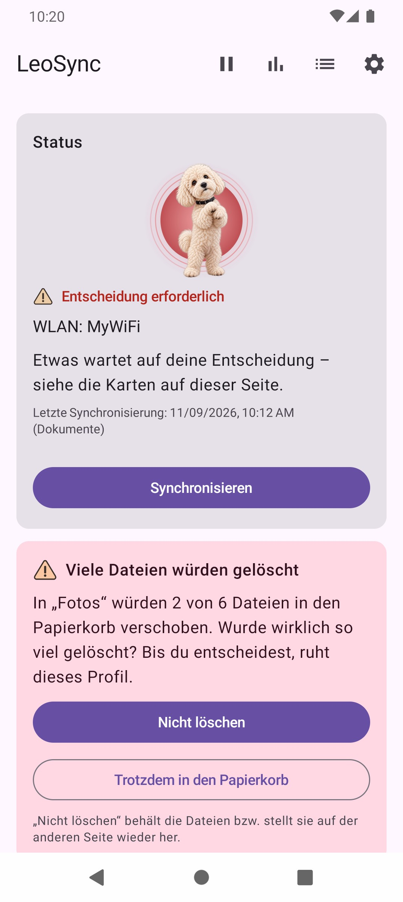

Wie die Synchronisierung funktioniert
Neben dem Foto-Backup bietet LeoSync Profile vom Typ Ordner synchronisieren. Damit gleichst du einen beliebigen Ordner auf dem Handy mit einem Ordner auf dem PC oder NAS ab, 1:1 und mit allen Dateitypen. Du wählst die Richtung: vom Handy zum PC, vom PC zum Handy oder in beide Richtungen.
Bei der beidseitigen Synchronisierung vergleicht LeoSync drei Stände: Handy, PC und den Stand des letzten Abgleichs. So erkennt die App, was neu, geändert oder gelöscht wurde. Wurde dieselbe Datei auf beiden Seiten geändert, entscheidest du, welche Version gilt; die andere kommt in den Papierkorb.
SMB und Verbindungsaufbau
Die Übertragung läuft per SMB2/SMB3 direkt zwischen Handy und PC oder NAS. Im Profil trägst du die Freigabe (zum Beispiel \\192.168.1.20\Daten), Benutzer und Passwort ein; die IP-Adresse ist zuverlässiger als ein Name mit .local. Verbindung testen zeigt sofort, ob alles stimmt. Auf Wunsch erkennt LeoSync deinen PC zusätzlich an einer PC-Kennung, bevor Benutzername und Passwort gesendet werden.
Unterstützte Funktionen
- Beliebige Ordner und Dateitypen, einseitig oder beidseitig.
- Filter: Nur bestimmte Dateien synchronisieren oder Dateien ausschliessen, mit Mustern wie
*.pdfoderTemp/**. - Löschungen übernehmen (optional): Gelöschte und ersetzte Dateien landen im Papierkorb
@LeoSync-Binund lassen sich wiederherstellen. - Schutzbremse: Fehlt ein Ordner oder würden mehr als 20 % der Dateien gelöscht, hält LeoSync an und fragt nach.
- Versionsschutz: Die überschriebene Version der Gegenseite bleibt im Papierkorb.
- Simulation: Zeigt vorab, was passieren würde, ohne etwas zu übertragen.
- Robust: Abgebrochene Übertragungen werden fortgesetzt, und bis zu vier Dateien laufen parallel. Das Änderungsdatum der Dateien bleibt erhalten.


Konfigurationsmöglichkeiten
- Richtung: Handy → PC, PC → Handy oder beidseitig. Änderst du bei einem bestehenden Profil die Richtung, zeigt LeoSync vor dem Speichern, was sich ändert.
- Prüfintervall: Eine Einstellung für alle Ordner-Profile unter Einstellungen → Übertragung, 15 bis 1440 Minuten (Standard 60).
- Papierkorb: Leeren nach 0 bis 3650 Tagen (0 = nie), Standard 30 Tage.
- Schutzbremse: Schwelle von 1 bis 100 %.
- Auslöser: Automatisch im eingetragenen WLAN, auf Wunsch auch über mobile Daten oder VPN, nur beim Laden, pausierbar oder von Hand.
Die Einrichtung des PCs beschreibt die Hilfe Schritt für Schritt.
Häufige Fragen
Kann LeoSync Ordner in beide Richtungen synchronisieren?
Ja. Bei einem Ordner-Profil wählst du Handy zu PC, PC zu Handy oder beide Richtungen. Bei beidseitiger Synchronisierung vergleicht LeoSync Handy, PC und den letzten Stand und erkennt Konflikte.
Was passiert, wenn eine Datei auf beiden Seiten geändert wurde?
LeoSync fragt dich, welche Version gilt. Die andere Version kommt in den Papierkorb und lässt sich wiederherstellen.
Werden gelöschte Dateien sofort endgültig entfernt?
Nein. Ersetzte und gelöschte Dateien landen im Papierkorb @LeoSync-Bin und werden erst nach der eingestellten Frist geleert, standardmässig nach 30 Tagen.
Welche Dateitypen werden unterstützt?
Alle. Mit Filtern kannst du bestimmte Dateien einschliessen oder ausschliessen.